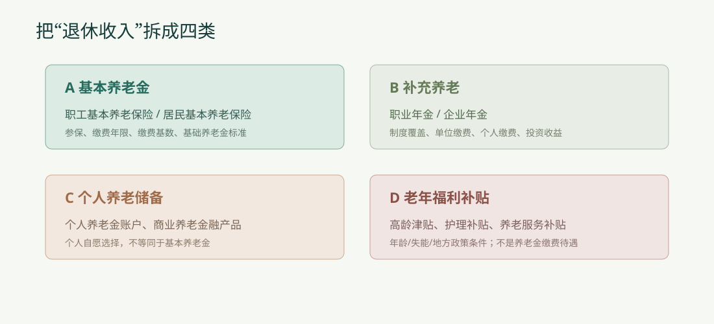

01｜人口约束：老龄化正在改变缴费与领取结构
国家统计局公布，2025 年末全国 60 周岁及以上人口为 32338 万人，占总人口 23.0%；65 周岁及以上人口为 22365 万人，占 15.9%。同年全国人口减少 339 万人，自然增长率为 -2.41‰。[S1]
老龄化不会自动导致养老金立即枯竭，但会改变缴费人数、领取人数、缴费工资总额、退休年龄和财政补助的长期比例。人口净流入地区与净流出地区，也可能出现不同的基金收支压力。
02｜制度地图：三支柱不能混为一谈

| 层次 | 主要制度 | 资金来源 | 主要功能 |
|---|---|---|---|
| 第一支柱 | 城镇职工、城乡居民基本养老保险 | 单位/个人缴费、财政补助、统筹调剂 | 基础退休收入 |
| 第二支柱 | 职业年金、企业年金 | 单位与个人缴费、投资收益 | 补充退休收入 |
| 第三支柱 | 个人养老金、商业养老金融 | 个人自愿缴费和投资收益 | 自主补充养老储备 |
2025 年末，全国基本养老保险参保人数 107591 万人，其中城镇职工基本养老保险参保人数 54672 万人，城乡居民基本养老保险参保人数 52919 万人；居民养老保险实际领取待遇人数 18820 万人。城镇职工基本养老保险中，参保职工 39457 万人、参保离退休人员 15215 万人。按人数简单相除，约为每 1 名退休人员对应 2.59 名参保职工；这只是年末存量人数比，不是正式精算抚养比，也没有反映缴费工资、缴费完整性、财政补助和地区差异。[S2]
“参保人数”不等于“领取人数”，也不等于“当年缴费人数”。居民养老保险中大量参保人尚未达到待遇领取年龄；城镇职工参保人数则包括在职职工和退休人员。直接用参保人数推算当期抚养比会产生口径错误。
03｜机关事业单位改革：并轨了什么，仍然有什么差别
国务院 2015 年决定自 2014 年 10 月 1 日起推进机关事业单位工作人员养老保险制度改革，适用于公务员法管理单位、参照公务员法管理的机关（单位）、事业单位及其编制内工作人员。改革建立社会统筹与个人账户相结合的基本养老保险制度，由单位和个人共同缴费。[S3]
制度改革的意义，是将机关事业单位工作人员纳入社会保险缴费框架；但它不意味着所有退休人员的养老金计算结果、历史权益和补充待遇完全相同。特别需要注意：机关事业单位基本养老保险基金单独建账，与企业职工基本养老保险基金分别管理使用；机关事业单位在基本养老保险之外，还应建立职业年金。[S3]
《机关事业单位职业年金办法》规定，单位缴费比例为本单位工资总额的 8%，个人缴费比例为本人缴费工资的 4%。[S4] 这是制度性差异，但不能据此推断每一位机关事业单位退休人员的实际总待遇都必然高于每一位企业退休人员；缴费年限、缴费基数、历史过渡、退休时间和地方计发参数仍会影响结果。
04｜第二、第三支柱：覆盖人数不能只看名义制度
2025 年末，全国有 17.79 万户企业建立企业年金，参加职工 3343 万人；个人养老金累计缴存金额 1452 亿元。[S2] 这说明补充养老制度正在发展，但企业年金参与人数不能直接等同于全部企业职工的覆盖率；个人养老金累计缴存额也不等同于已经发放的养老金待遇。
第二支柱的关键变量是企业是否建立年金、缴费比例、职工流动时的权益衔接和投资收益；第三支柱则更依赖个人可支配收入、税收激励、产品选择、投资风险和长期持有意愿。三者不能混成一个“退休收入”数字。
05｜城乡居民养老保险：低缴费与财政补助共同决定待遇
城乡居民基本养老保险主要面向未参加城镇职工基本养老保险的城乡居民。待遇通常由基础养老金和个人账户养老金构成。个人缴费档次、缴费年限、地方补贴和基础养老金标准，都会影响最终领取金额。
2025 年城乡居民基本养老保险全国基础养老金最低标准提高 20 元；2026 年政府工作报告继续提出将月最低标准再提高 20 元。[S2][S5] 这是全国最低标准的政策调整，不代表全国各地的实际待遇完全相同。地方可以在国家最低标准之上提高基础养老金，但资金来源和提高幅度受到当地财政能力影响。
居民养老金偏低，不能简单归结为“财政不给钱”或“制度不公平”。其制度基础包括较低的个人缴费水平、不同的缴费年限、基础养老金补助和地方财力差异。若要提高待遇，需要同时讨论缴费档次、政府补助、统筹层次和长期财政来源。
06｜年度调整：2%不是每个人都涨 2%
2025 年企业和机关事业单位退休人员基本养老金总体调整水平，按照 2024 年退休人员月人均基本养老金的 2%确定；各省采取定额调整、挂钩调整和适当倾斜相结合的办法。[S6]
因此，“总体调整 2%”是总体人均调整比例，不等于每个人的个人养老金都按原金额增加 2%。定额调整体现一定的公平原则，挂钩调整与缴费年限或原养老金水平相关，倾斜调整则照顾高龄和艰苦边远地区退休人员。不同省份的具体方案和个人缴费经历，会导致个人实际增加额不同。
07｜全国统筹：统筹调剂不等于所有地区完全同池
2025 年预算执行资料显示，企业职工基本养老保险全国统筹调剂资金中，地方上缴约 2545.74 亿元，中央拨付约 2546.44 亿元。[S7] 这类调剂机制有助于在地区之间平衡基金压力，但不能简单理解为所有地区基金收入、支出和个人账户已经完全合并成一个没有地域差别的账户。
分析养老基金时，至少要分清基金收入与财政补助、当年收支结余与累计结余、全国总量与省际分布、职工与居民制度、现金流平衡与长期精算平衡。全国社会保险基金预算还包含其他社会保险项目，不能拿整个社会保险基金结余直接证明“养老金基金一定有盈余”。
08｜延迟退休：缓解结构压力，不是万能解法
2024 年全国人大常委会通过渐进式延迟法定退休年龄决定，自 2025 年 1 月 1 日起实施，用 15 年逐步将男职工法定退休年龄由 60 岁延迟至 63 岁，将原法定退休年龄为 55 岁的女职工延迟至 58 岁，将原法定退休年龄为 50 岁的女职工延迟至 55 岁。[S8]
从 2030 年起，职工按月领取基本养老金的最低缴费年限将从 15 年逐步提高至 20 年，每年提高 6 个月；同时允许在规定条件下弹性提前或延迟退休。[S8]
延迟退休的机制是增加缴费年限、延后领取时间、缓和劳动年龄人口下降的影响。但它不能替代就业质量、劳动者健康、年龄歧视治理、灵活就业参保接续和地方财政转移制度。若劳动者接近退休年龄时难以就业，延迟退休可能增加其个人缴费和就业压力，政策效果取决于劳动市场是否同步调整。
09｜高龄津贴不是养老金：地方个案需要分开核验
高龄津贴、护理补贴、养老服务补贴、最低生活保障和基本养老金属于不同制度。它们的发放条件、资金科目、管理部门和财政责任不同。高龄津贴一般按年龄或地方政策条件发放，不以完整缴费年限为前提，不能与基本养老保险待遇混算。
2025 年末，全国享受老年人津补贴人数为 5353.8 万人，其中高龄津贴 4145.9 万人。[S9] 这些数字是福利津补贴覆盖人数，不是养老金领取人数。
项目此前讨论过湖南慈利县高龄津贴每月 5 元的案例。本轮没有取得该县原始公告及对应预算附件，因此不把“5 元”作为已独立核实的事实。即便地方公告最终确认该数字，也应放在高龄津贴政策中分析，而不能将其称为基本养老金标准。
10｜养老金可持续性：看四个层次，不看单一余额
- 短期支付能力：当期缴费、财政补助和统筹调剂能否覆盖当期待遇支出？
- 地区分布：人口净流出、就业结构弱、财政收入不足地区的基金压力如何由统筹和转移支付承担？
- 长期精算：未来缴费人数、领取人数、工资增长、退休年龄和寿命变化会如何影响收支？
- 待遇充足性：养老金能否覆盖基本生活成本？城乡、地区和职业群体之间差距如何变化？
年度结余是流量指标，累计结余是存量指标，精算平衡是对未来几十年的预测。三者不能互相替代。即使某年全国总量有结余，也不能据此排除部分地区或某些制度分项存在支付压力。
11｜长期护理保险：养老风险不只有养老金
养老金主要解决退休后的现金收入，长期护理保险则针对失能状态下的照护费用和服务供给，两者不能混算。2025 年末，长期护理保险参保人数为 30854.76 万人，享受待遇人数 192.91 万人；当年基金收入 369.62 亿元、支出 186.44 亿元，定点服务机构超过 1.3 万家，护理服务人员约 40.28 万人。[S2]
参保人数不等于已经享受待遇的人数；覆盖范围、待遇资格、失能评估、支付目录和服务供给能力仍需分别评估。老龄社会的保障结构不能只看养老金，还要看医疗、长期护理、养老服务和家庭照护负担。
12｜结论
中国养老金体系不是单一的“退休金池”，而是基本养老保险、职业/企业年金、个人养老金与老年福利补贴构成的多层制度。
“并轨”主要改变了机关事业单位工作人员的基本养老保险缴费结构和制度框架，并未消除职业年金、历史过渡和不同缴费基础带来的待遇差异；城乡居民养老金的低待遇与缴费能力、财政补助和地方标准相关；延迟退休能够缓解部分人口结构压力，但不能代替就业和财政制度改革。
判断养老金风险，必须把人口、缴费、待遇、财政补助、统筹调剂和地方差异放在同一张账上。不能用参保人数、某年社保基金总余额或某个地方高龄津贴标准单独推出全国养老金是否可持续。
来源定位：正文 [S1]—[S9] 指向国家统计、政策原文和官方公报。
相关研究
- 地方政府债务化解：置换、融资平台转型与财政关系重构：地方财政收入、转移支付和社会保障支出责任。
- 人口流动与城市分化：中国县城、都市圈与地方收缩：老龄化、人口流动与地区间养老基金压力。
参考来源
- 国家统计局，《中华人民共和国 2025 年国民经济和社会发展统计公报》，2026-02-28。原文
- 民政部、全国老龄办，《2025 年度国家老龄事业发展公报》，2026-07-31。公报全文
- 国务院，《关于机关事业单位工作人员养老保险制度改革的决定》，国发〔2015〕2 号。原文
- 国务院办公厅，《机关事业单位职业年金办法》，国办发〔2015〕18 号。原文
- 司法部政府工作报告专题转载，2026 年城乡居民基础养老金月最低标准再提高 20 元。政策摘要
- 人社部、财政部，《关于 2025 年调整退休人员基本养老金的通知》，人社部发〔2025〕38 号。原文
- 财政部，《关于 2025 年中央和地方预算执行情况与 2026 年中央和地方预算草案的报告》，2026-03-16。原文
- 全国人大常委会，《关于实施渐进式延迟法定退休年龄的决定》，2024-09-13。原文